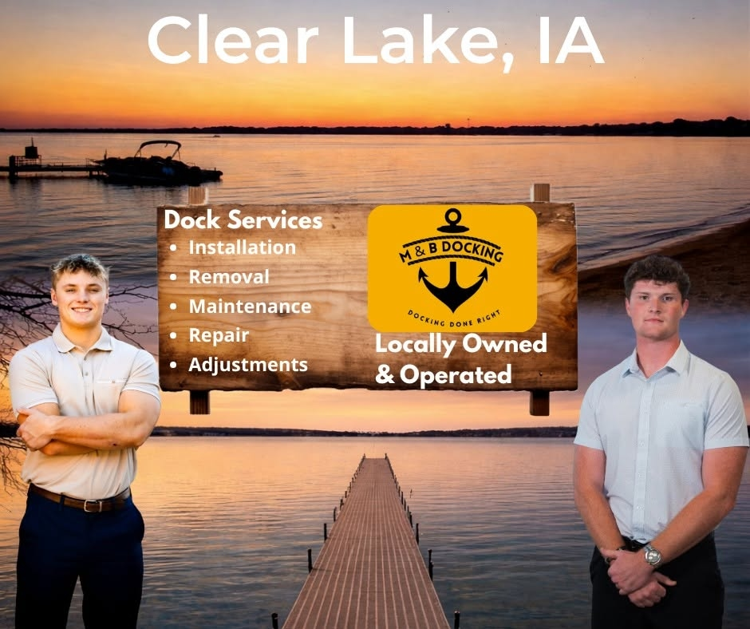

Local Dock Service, Built to Last
Proudly based in Clear Lake, Iowa. Max and Blake both grew up here, and we've been working on docks for more than five years.
Clear Lake's Trusted Waterfront Partner
M&B Docking is proudly based in Clear Lake, Iowa. Max Orchard and Blake Enke both grew up here, live here, and understand how important it is to keep your lake property ready for the season.
With more than five years of hands-on experience working with docks, we provide reliable, straightforward service for local homeowners and lake-property owners. Whether you need help getting your dock in, taking it out, making repairs, or preparing your waterfront for the season, we focus on doing the work carefully and making the process easy for you.
We are a local team that values dependable work, clear communication, and taking care of our neighbors around Clear Lake.
- ✓5+ years of experience serving residential lake docks
- ✓Clear Lake locals — born, raised, and living here
- ✓Careful, dependable work every time
- ✓Clear communication and honest pricing

Why Homeowners Choose M&B Docking
We do the work carefully and make the process easy for you.
Dependable Work
Every dock install, removal, and repair gets done right — the kind of work we'd want on our own waterfront.
Clear Communication
We keep you in the loop from first call to finished job. No surprises, no pressure, no jargon.
Taking Care of Neighbors
We're your neighbors around Clear Lake. Treating your property like our own is the only way we know how to work.